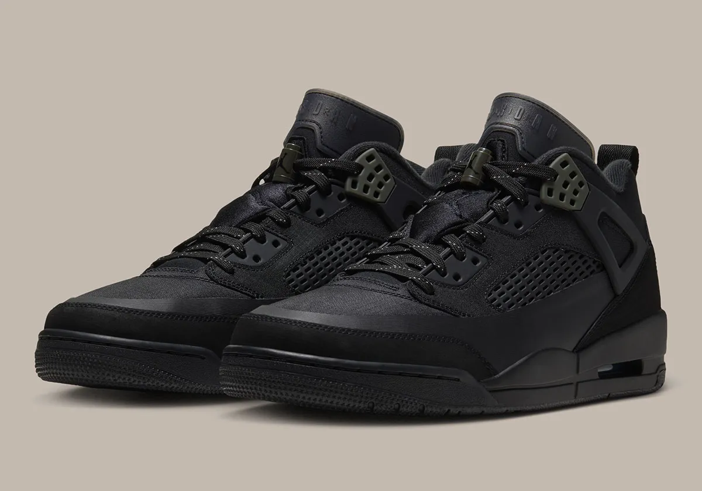
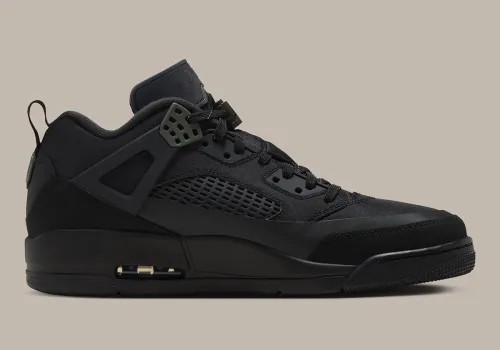
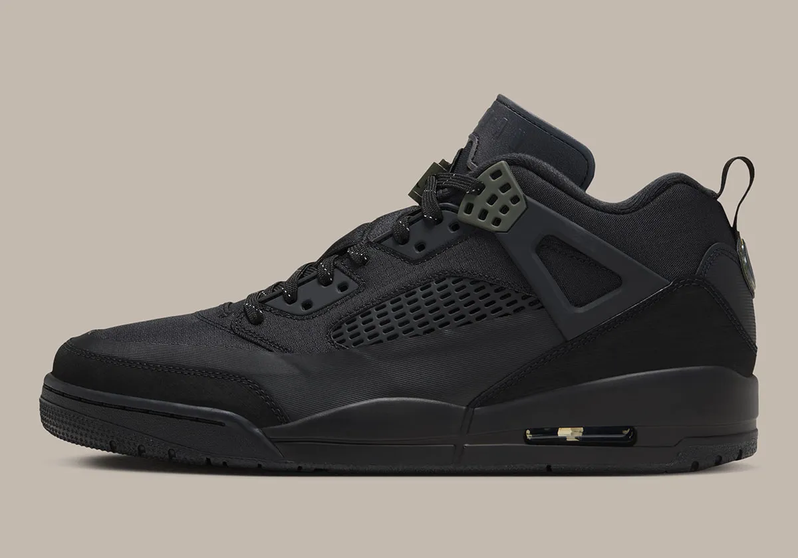
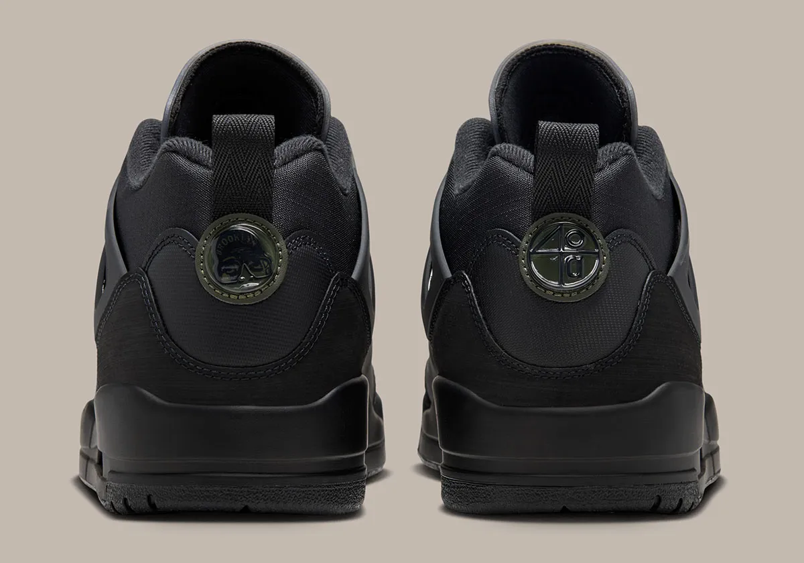

Logo após o lançamento do Nike Air Max 95 GORE-TEX , o Jordan Spiz'ike Low, um dos modelos lifestyle mais vendidos da Jordan Brand, também está pronto para o outono e inverno com uma transformação robusta. O Spiz'ike Low Utility se prepara para a estação com algumas mudanças importantes nos materiais, com lançamento previsto para os próximos meses em diversas cores. Esta nova opção se inspira em uma das versões mais populares do modelo, a "Triple Black", também conhecida como "Black Cat", e chegará em breve à Nike e a lojas selecionadas.
A maioria dos modelos Nike e Jordan para o inverno são mais robustos ou volumosos do que suas versões padrão, mas o Spiz'ike Low Utility é, na verdade, um pouco mais elegante, com cabedal em ripstop e um novo para-lama sintético. Todo o resto, incluindo o solado, a língua do Jordan 6 e as abas do Jordan 4, permanece o mesmo.
Esta versão mantém-se fiel ao modelo "Black Cat", embora com cadarços refletivos e um tom verde militar nos ilhós e no fecho do cadarço. O Spiz'ike original era um tênis de inverno popular em seu auge, graças à sua própria edição especial para o inverno, mas a Jordan Brand manteve essa versão exclusiva para crianças nos últimos anos. Se você busca esse mesmo estilo, esta pode ser a sua melhor opção.
O Jordan Spiz'ike Low Utility "Black" será lançado no outono/inverno de 2026 por US$ 175, um aumento de dez dólares em relação ao modelo básico. Confira as imagens oficiais abaixo e veja se ele pode entrar na sua coleção de tênis para o outono.



